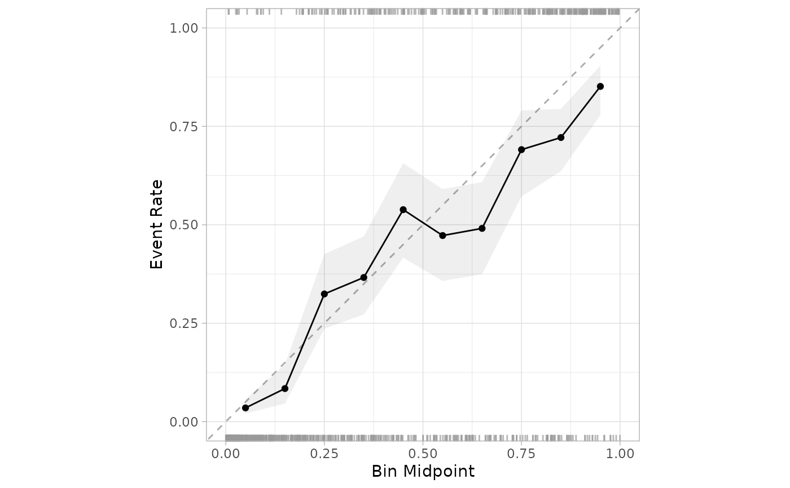
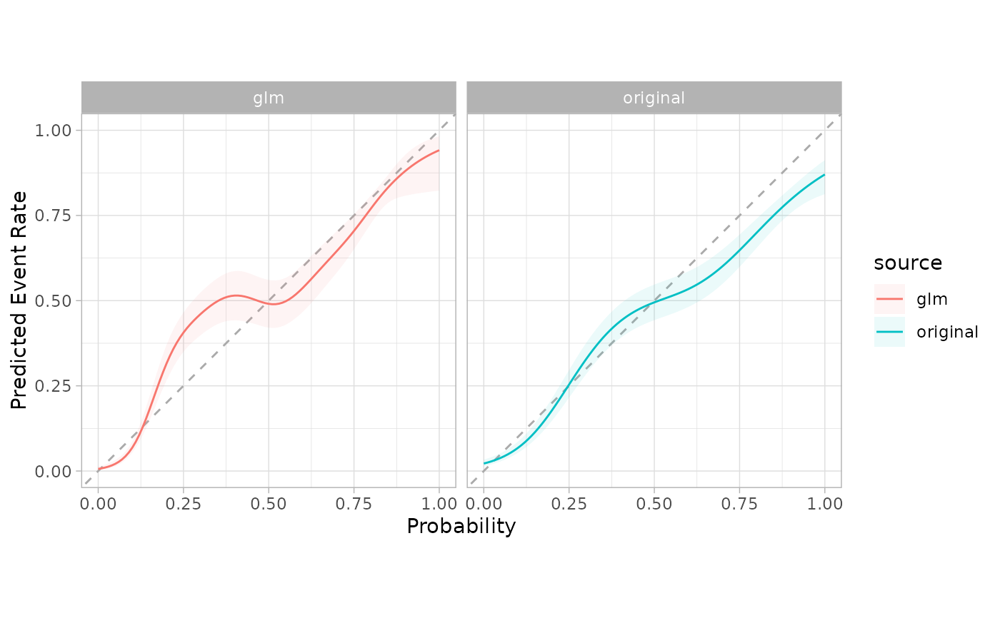

A plot is created to assess whether the observed rate of the event is about the same as the predicted probability of the event from some model.
A sequence of even, mutually exclusive bins are created from zero to one. For each bin, the data whose predicted probability falls within the range of the bin is used to calculate the observed event rate (along with confidence intervals for the event rate). If the predictions are well calibrated, the fitted curve should align with the diagonal line.
Usage
cal_plot_breaks(
.data,
truth = NULL,
estimate = dplyr::starts_with(".pred"),
num_breaks = 10,
conf_level = 0.9,
include_ribbon = TRUE,
include_rug = TRUE,
include_points = TRUE,
event_level = c("auto", "first", "second"),
...
)
# S3 method for class 'data.frame'
cal_plot_breaks(
.data,
truth = NULL,
estimate = dplyr::starts_with(".pred"),
num_breaks = 10,
conf_level = 0.9,
include_ribbon = TRUE,
include_rug = TRUE,
include_points = TRUE,
event_level = c("auto", "first", "second"),
...,
.by = NULL
)
# S3 method for class 'tune_results'
cal_plot_breaks(
.data,
truth = NULL,
estimate = dplyr::starts_with(".pred"),
num_breaks = 10,
conf_level = 0.9,
include_ribbon = TRUE,
include_rug = TRUE,
include_points = TRUE,
event_level = c("auto", "first", "second"),
...
)
# S3 method for class 'grouped_df'
cal_plot_breaks(
.data,
truth = NULL,
estimate = NULL,
num_breaks = 10,
conf_level = 0.9,
include_ribbon = TRUE,
include_rug = TRUE,
include_points = TRUE,
event_level = c("auto", "first", "second"),
...
)Arguments
- .data
An ungrouped data frame object containing predictions and probability columns.
- truth
The column identifier for the true class results (that is a factor). This should be an unquoted column name.
- estimate
A vector of column identifiers, or one of
dplyrselector functions to choose which variables contains the class probabilities. It defaults to the prefix used by tidymodels (.pred_). The order of the identifiers will be considered the same as the order of the levels of thetruthvariable.- num_breaks
The number of segments to group the probabilities. It defaults to 10.
- conf_level
Confidence level to use in the visualization. It defaults to 0.9.
- include_ribbon
Flag that indicates if the ribbon layer is to be included. It defaults to
TRUE.- include_rug
Flag that indicates if the Rug layer is to be included. It defaults to
TRUE. In the plot, the top side shows the frequency the event occurring, and the bottom the frequency of the event not occurring.- include_points
Flag that indicates if the point layer is to be included.
- event_level
single string. Either "first" or "second" to specify which level of truth to consider as the "event". Defaults to "auto", which allows the function decide which one to use based on the type of model (binary, multi-class or linear)
- ...
Additional arguments passed to the
tune_resultsobject.- .by
The column identifier for the grouping variable. This should be a single unquoted column name that selects a qualitative variable for grouping. Default to
NULL. When.by = NULLno grouping will take place.
Examples
library(ggplot2)
library(dplyr)
cal_plot_breaks(
segment_logistic,
Class,
.pred_good
)

cal_plot_logistic(
segment_logistic,
Class,
.pred_good
)
cal_plot_windowed(
segment_logistic,
Class,
.pred_good
)
# The functions support dplyr groups
model <- glm(Class ~ .pred_good, segment_logistic, family = "binomial")
preds <- predict(model, segment_logistic, type = "response")
gl <- segment_logistic %>%
mutate(.pred_good = 1 - preds, source = "glm")
combined <- bind_rows(mutate(segment_logistic, source = "original"), gl)
combined %>%
cal_plot_logistic(Class, .pred_good, .by = source)

# The grouping can be faceted in ggplot2
combined %>%
cal_plot_logistic(Class, .pred_good, .by = source) +
facet_wrap(~source) +
theme(legend.position = "")